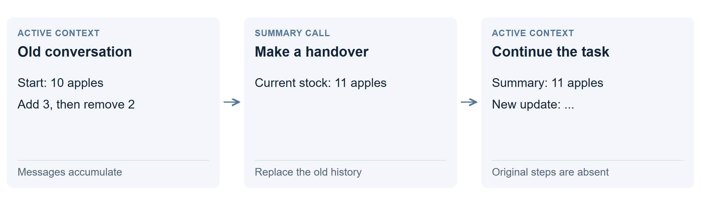

Replace old history with a summary
Replace a long conversation with a shorter handover note. The next model call receives that note and recent messages, freeing room for the task to continue.

How it works
Suppose the history says “10 apples, add 3, remove 2.” A useful summary might say “Current stock: 11 apples.” The next update can build on 11 without carrying all three earlier messages.
Here, the application asked the same Qwen3.8-27B model for a summary at 75% of the 32K budget. It kept the original instructions and task, replaced the older working history with that summary, and continued. Read the summary prompt.
What happened in the test?
| Trial | Correct | Time |
|---|---|---|
| 121K ledger | 24/24 | 41 min |
The agent made 12 summaries. It finished correctly, but took longer than the successful large-window run, which took 26 minutes.
Why might it help?
A short account of current decisions, facts and unfinished work can support a much longer job. Smaller prompts need less working memory; useful details can survive after their original messages leave the window.
What can go wrong?
“11 apples” answers the current-total question, but cannot explain every earlier change. Repeated summaries can omit a detail or carry an earlier mistake forward. Save original records separately if later questions may need them.
Making a summary also takes time. Replacing earlier text reduces prefix-cache reuse, so the next call may need more reading even though the prompt is shorter.
Technical details: periodic summaries versus self-editing
This arm used a threshold-triggered summarizer, a 32K working budget and no external data files. It generated about 211K tokens across the task, including its work to maintain the conversation. Total elapsed time includes ordinary calls, summaries and tools; it is not a decode-rate measurement.
Self-editing instead gives the agent control over specific parts of its message history. It can replace one obsolete batch or update an exact state block without requesting the same broad handover each time.
Original comparison and summary failures · Time and cache-reuse analysis